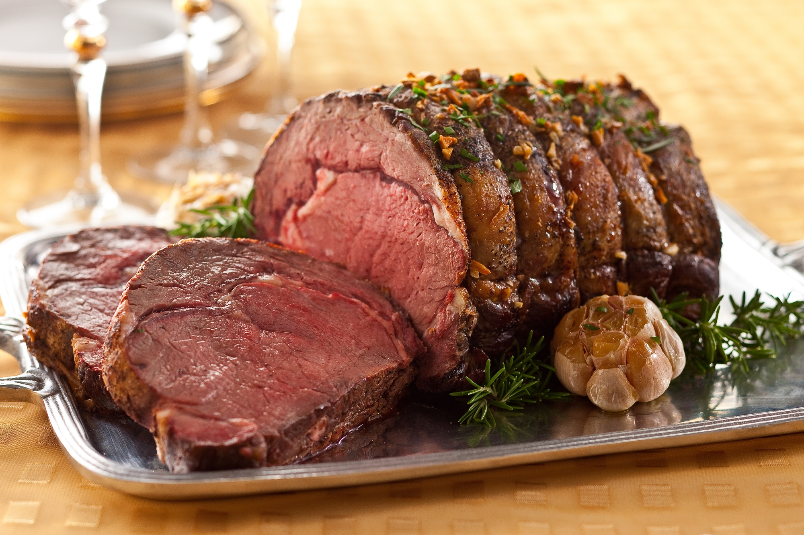

Roast of Stag
"The best part about slaying a stag is the meal that comes after." - Freya

Recipie
Prep Information
- Prep: 15 mins
- Cook: 2 mins
- Additional: 2 hrs
- Total: 4 hrs 15 mins
- Servings: 12
- Yeild: 10 - 12 Servings
Nutritional Information
Ingredients
- 3 teaspoons grated fresh ginger root
- 1/3 cup of orange marmalade
- 4 cloves garlic, minced
- 3 tablespoons soy sauce
- 1 tablespoon mustard powder
- 1 cup beer
- 1 (8 pound) prime rib stag
- 1/4 cup olive oil
- freshly ground black pepper
Directions
-
Mix together the ginger, marmalade, garlic, soy sauce, brown sugar, hot
sauce, and mustard. Stir in the beer. Prick holes all over the roast
with a 2 pronged fork. Pour marinade over roast. Cover, and refrigerate
for at least 2 hours, basting at least twice.
- Preheat oven to 400 degrees F (200 degrees C).
-
Place roast on a rack in a roasting pan. Pour about 1 cup of marinade
into the roasting pan, and discard remaining marinade. Pour olive oil
over roast, and season with freshly ground black pepper. Insert a
roasting thermometer into the middle of the roast, making sure that the
thermometer does not touch any bone. Cover roasting pan with aluminum
foil, and seal edges tightly around pan.
-
Cook roast for 1 hour in the preheated oven. After the first hour,
remove the aluminum foil. Baste, reduce heat to 325 degrees F (165
degrees C), and continue roasting for 1 more hour. The thermometer
reading should be at least 140 degrees F (60 degrees C) for medium-rare,
and 170 degrees F (76 degrees C) for well done. Remove roasting pan from
oven, place aluminum foil over roast, and let rest for about 30 minutes
before slicing.
Nutrition Facts
Per Serving:
630 calories; protein 30.1g; carbohydrates 9.9g; fat 50.9g; cholesterol
112.6mg; sodium 319.7mg.
Home